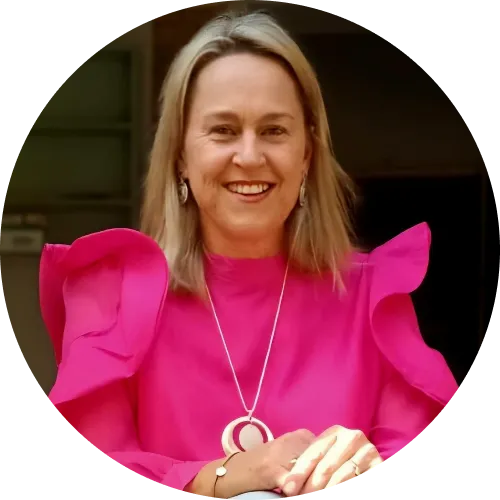
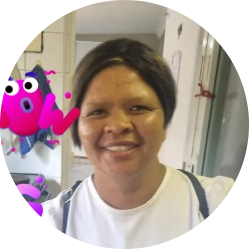
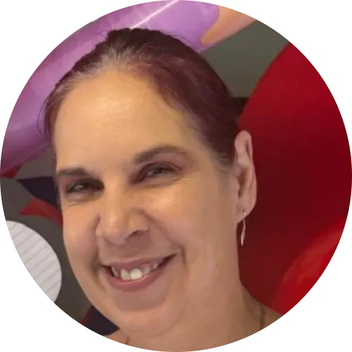
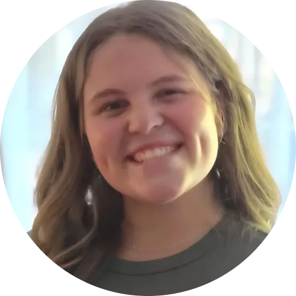
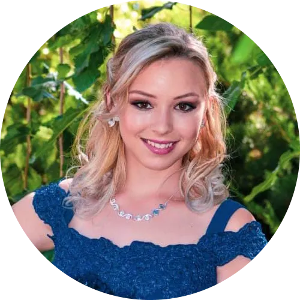
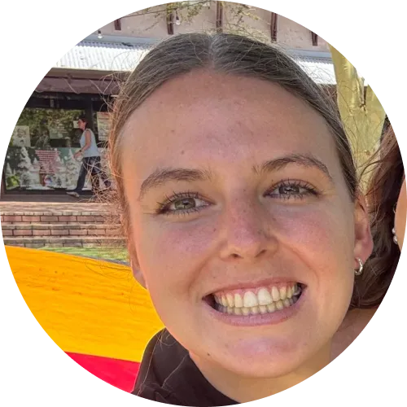
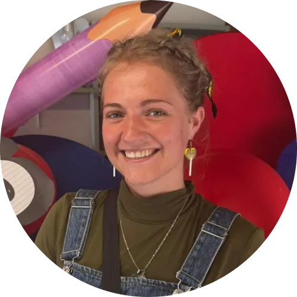

Oor Ons
Ontmoet ons span en leer meer oor ons filosofie
Lig wat lei, groei wat bly
Educating Young Minds
Meer as Net 'n Leersentrum
Ons missie is om 'n rustige, gestruktureerde en aanmoedigende leeromgewing te bied waar elke leerder verstaan en ondersteun word as 'n individu.
Ons is toegewyd aan persoonlike akademiese leiding, die bou van selfvertroue, en die koestering van emosionele welstand deur klein klasse en boeiende ervarings.
Ons visie is om 'n vertroude leerhuis te wees waar elke kind veilig, gewaardeer en geïnspireer voel om te groei tot 'n selfversekerde, bekwame leerder.
Ons Belofte
Elke leerder se volle potensiaal bereik deur sagte leiding en 'n lewenslange liefde vir leer.
Ons Filosofie
Die skriftuurlike beginsels wat ons leiding gee in alles wat ons doen.
"Ek is tot alles in staat deur God wat my die krag gee"
Filippense 4:13"Geloof, hoop en liefde. En die grootste hiervan is die liefde"
1 Korintiërs 13:13"Die beginsel van die wysheid is die vrees van die Here, en kennis van die Heilige is verstand"
Spreuke 9:10Ontmoet die Tutors
Passievol, toegewyd en lief vir elke kind — dit is ons span.

Marina Botha
Marina het 15 jaar ervaring in onderwys. Sy glo in die moontlikheid van die mens in totaliteit as siel, liggaam en gees. Haar benadering tot onderwys is holisties.
Sy glo daarin dat elke leerder emosioneel, geestelik en fisies gebalanseerd moet ontwikkel — want emosionele welstand verseker akademiese vordering.
"Niks is ooit moontlik sonder my Skepper en Hemelse Vader se almagtige liefde en genade nie. Met Hom wat ons vooruitgaan, kan ons elke nuwe dag aanpak en 'n verskil maak in elke leerder se lewe."
Sannelie Swemmer
Sannelie het 'n passie vir kinders en hul onderrig. Sy het 23 jaar ondervinding in die Leeropvoeding en is toegewyd aan haar werk.
Sannelie het 'n besondere sagte hart en aanvoeling vir die behoeftes van kinders. Sy glo dat 'n kind sy volle potensiaal kan bereik as 'n kind in 'n ontspanne en omgee-atmosfeer werk en leer. Sannelie glo ook aan "Leer deur Speel" vir kinders.
Om onderrig aan jonger kinders te bied was van jongs af nog altyd haar doel in haar beroep en liefde en sagtheid gaan daarmee saam. Sannelie glo dat alles wat sy doen tot eer en heerlikheid van Abba Vader is.
"Kinders is skitterende perels wat in die klas 'n unieke halssnoer vorm."

Felicity Isaks
Sy is 'n voorslag in die kombuis vir die naskool se spyskaart wat kinders laat smul aan hul middagete!
Felicity is 'n getroue dame wat diensbaar is by ons Grondslagfase. Sy put haar daaglikse krag uit haar vaste vertroue in Jesus Christus!
Haar glimlag is aansteeklik en sy gee om vir ander al moet sy die ekstra myl stap.
Minique Engelbrecht
Minique se visie is om 'n gestruktureerde en respekvolle leeromgewing te skep waar dissipline die grondslag van sukses is. Sy glo dat respek wedersyds moet wees en dat duidelike grense kinders help om veilig en gefokus te voel.
Met 'n agtergrond in sielkunde benader sy onderwys met 'n diep begrip van elke leerder se emosionele en kognitiewe behoeftes. Hoewel sy streng standaarde handhaaf, is haar styl deernisvol en ondersteunend. Sy het 'n besondere waardering vir leerders wat bereid is om moeite te doen en werklik wil leer. Haar doel is om elke kind te help groei — nie net akademies nie, maar ook in karakter, selfdissipline en selfvertroue.
"Blom waar jy geplant is — en ontdek dat jou wortels jou sterker maak, jou grense jou rigting gee, en jou groei jou toekoms vorm." 🌸

Trudie Botha
Trudie het 17 jaar ondervinding in die rekeningkundige veld, met bestuur van finansies in ander maatskappye as hoof pligte. Hierdeur het sy verskeie leierseienskappe ontwikkel wat daagliks toegepas word.
Trudie fokus hoofsaaklik op Lewensoriëntering, Gasvryheidstudies, Verbruikerstudies, Tegnologie en EBW. Haar sterkpunte is deeglikheid, kommunikasie en akuraatheid. Sy glo dat elke leerder, met baie geduld, die nodige aandag kry om te groei.

Weanri Berndt
Weanri Berndt is 'n toegewyde tutor wat Engels, Visuele Kunste, Besigheidstudies en Toerisme aanbied. Sy benader elke les met 'n opregte liefde vir leer en 'n begeerte om kinders te help ontdek wie hulle is en wat hulle kan bereik. Vir haar gaan onderwys nie net oor punte nie, maar oor die vreugde van groei en die ontdekking van nuwe moontlikhede.
Sy glo dat elke kind unieke potensiaal het en verdien 'n veilige, ondersteunende ruimte waar hulle kan leer, vrae kan stel en selfs foute kan maak sonder vrees. Haar doel is om leerders aan te moedig om selfvertroue te bou, nuuskierig te wees en met moed en vreugde na hul toekoms te kyk. Weanri hoop om deur haar werk 'n klein liggie te wees wat kinders inspireer om in hulself te glo en leer as 'n geskenk te sien wat hulle vir die res van hul lewens kan dra.

Doané Liebenberg
Doané Liebenberg is 'n toegewyde en dinamiese opvoeder met waardevolle ondervinding in sowel die Grondslagfase as die Middelslagfase, insluitend werk met leerders in multi-graadklasse en kinders met spesiale onderwysbehoeftes. Sy bring 'n unieke kombinasie van geduld, kreatiwiteit en gestruktureerde klaskamerbestuur wat 'n warm, veilige en stimulerende leeromgewing skep. Haar vermoë om lesse te differensieer, leerdervordering noukeurig te monitor en sterk verhoudings met ouers te bou, maak haar 'n veelsydige en betroubare aanwins vir enige skool.
Doané se passie vir kind-ontwikkeling, haar noukeurige werkstyl en haar diep ingesteldheid op elke leerder se potensiaal, plaas haar as 'n uitstaande kandidaat vir enige onderwyspos wat groei, empatie en hoë standaarde vereis. Haar werk word gedryf deur haar geloof dat elke kind 'n unieke skepping van God is, met 'n doel en 'n droom wat ontsluit moet word.
"Lei die kind op volgens die weg wat hy moet gaan; selfs as hy oud is, sal hy nie daarvan afwyk nie." — Spreuke 22:6

Isandri Liversage
As Juffrou is dit haar visie om te glo onderrig gaan oor meer as net boeke en toetse. Dit gaan daaroor om waardes te kweek en verantwoordelike burgers te vorm.
Met vyf jaar se ondervinding in die klaskamer het sy gesien hoe klein gesprekke groot veranderinge in 'n kind se denke kan bring. Sy sien haarself nie net as 'n onderwyser nie, maar as iemand wat 'n verskil in 'n kind se lewe kan maak.
Deur haar onderrig wil sy leerders inspireer om trots te wees op hul rol in die wêreld. Haar doel is om nie net kennis oor te dra nie, maar om 'n ingesteldheid van verantwoordelikheid en hoop te kweek — want ware onderrig leef verder as die klaskamer.
📖 Jesaja 40:31 — \"Maar dié wat op die Here wag, kry nuwe krag; hulle vaar op met vleuels soos arende; hulle hardloop en word nie moeg nie, hulle wandel en word nie mat nie.\"

Ané Grové
Ek is 'n 24-jarige passievolle opvoeder met 'n groot liefde vir kinders en 'n roeping om 'n positiewe verskil in hulle lewens te maak. Onderrig is vir my meer as net 'n beroep — dit is 'n geleentheid om kinders te lei, te inspireer en te help om hulle volle potensiaal te ontdek.
Ek het my BEd in Intermediêre Fase (Wiskunde en Natuurwetenskappe) voltooi by Akademie Reformatoriese Opleiding en Studies tussen 2021 en 2024. Ek bied Wiskunde, Afrikaans en Natuurwetenskappe aan, en streef daarna om hierdie vakke op 'n kreatiewe en betekenisvolle manier aan te bied sodat leerders dit kan verstaan, geniet en selfvertroue daarin kan ontwikkel.
My doel is om 'n veilige, ondersteunende en stimulerende leeromgewing te skep waar elke kind waardevol voel en aangemoedig word om te groei. Ek glo dat kinders nie net akademies moet ontwikkel nie, maar ook emosioneel en geestelik. Deur waardes van geloof, liefde en respek uit te leef, hoop ek om 'n positiewe invloed in elke leerder se lewe te hê.
Kyk Gerus Rond
Van klaskamers tot die swembad — hier is 'n kyk na ons pragtige omgewing.